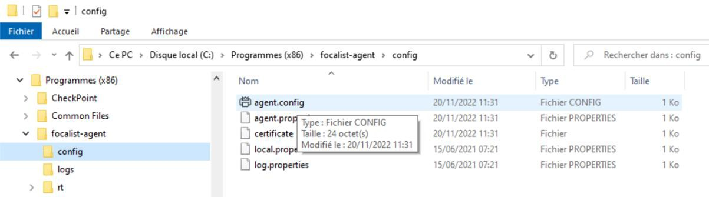
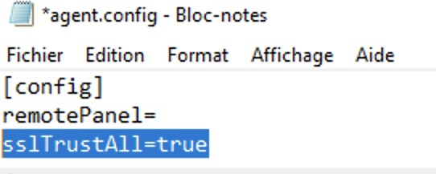
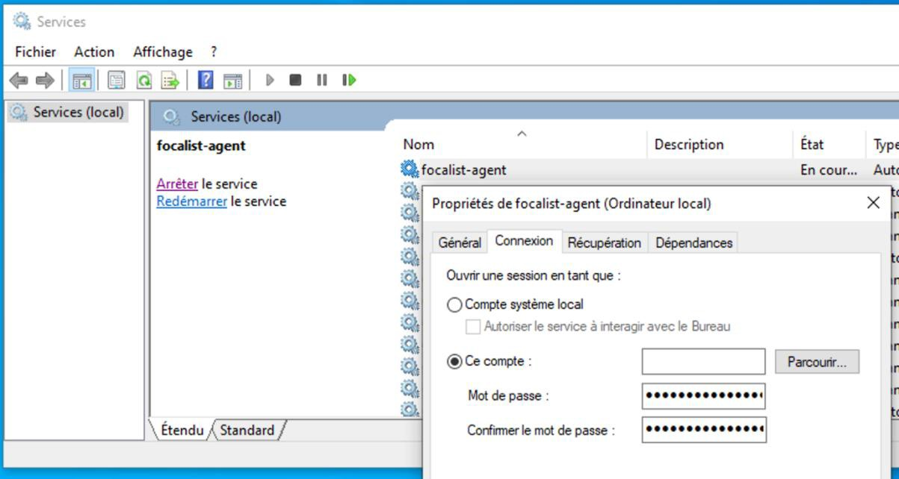

Dépanner les problèmes courants
Problème de code unique
Si l'étape de téléchargement du certificat lié à votre code unique échoue, cela peut être dû à :
-
une erreur de saisie du code (4 séquences de 4 lettres en majuscules séparées par des tirets),
-
la réutilisation d'un code unique déjà utilisé par un autre agent,
-
la réinstallation de l'agent avec le même code unique sans avoir préalablement révoqué le certificat actuel.
Problème de certificat à travers une passerelle Internet
Certaines passerelles Internet substituent les certificats SSL utilisés pour sécuriser le connexion. Dans ce cas on peut trouver ce genre de message dans le fichier log :
oct. 11, 2021 11:56:19 AM com.princity.connector.client.websocket.ConnectorClient connect GRAVE: Cannot connect to server
java.util.concurrent.ExecutionException: javax.websocket.DeploymentException: Connection failed.
...
Caused by: javax.net.ssl.SSLHandshakeException: General SSLEngine problem
...
unable to find valid certification path to requested target
Pour éviter ce problème, ajoutez la ligne suivante dans le fichier agent.config à la suite des lignes existantes :
sslTrustAll=true


Utilisation d'un compte de service
Si la passerelle Internet n'ouvre pas l'accès de l'agent au serveur FOCALIST, c'est peut-être qu'elle n'arrive à authentifier l'ordinateur demandeur. Dans ce cas, il faut exécuter l'agent sous un compte de service connu de l'annuaire Active Directory.
Lancez le module d'administration des Services en tapant services.msc dans le champ de recherche du bureau. Faites dérouler la liste des services jusqu'à la ligne focalist-agent, faites un clic droit pour afficher les Propriétés du service. Dans l'onglet Connexion, décochez l'option Compte système local dans et renseignez les compte et mot de passe à utiliser dans l'option Ce compte :

Les paramètres seront fournis par l'administrateur système du client. En attendant vous pouvez utiliser les identifiants Windows utilisés pour se connecter à cet ordinateur, mais cela n'est pas recommandé, car en cas de changement d'affectation ou de mot de passe, la connexion ne fonctionnera plus.
Autre installation en cours
Si la procédure d'installation échoue, vérifiez que vous n'avez pas lancé plusieurs installations en parallèle. Le code d'erreur associé est 1603.